潮回りウォッチ｜大潮・中潮・小潮と月齢がわかるGarmin向け釣りウォッチフェイス
潮回りウォッチ(英語名 Tide Phase)は、今日の潮回り(大潮・中潮・小潮・長潮・若潮)と月齢を、手首で確かめられる釣り向けのウォッチフェイスです。日の出・日の入りや7日分の潮回りの帯まで表示する有料版「潮回りウォッチ」と、今日の潮回りを大きく表示する無料の簡易版「潮回りウォッチ Lite」の2つがあります。
結論から言うと、潮回りは旧暦の日付による一般的な区分で示す目安で、満潮・干潮の時刻や潮位は表示しません。今日の潮回りと月齢だけを見たいなら無料のLite、日の出・日の入りや今日から7日間の潮回りまで見たいなら有料版(48時間の無料試用のあと、US$3.99の買い切り)が向いています。
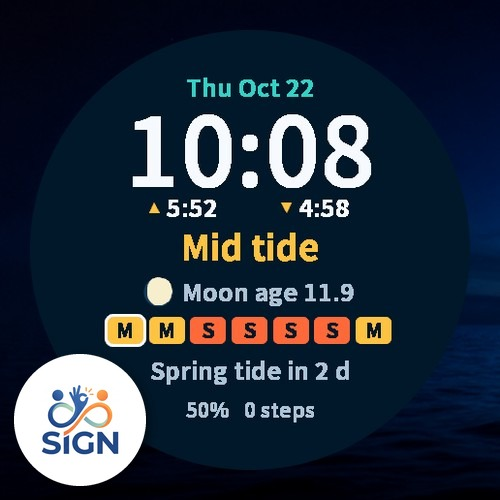
潮回りウォッチ / 潮回りウォッチ Lite
今日の潮回りと月齢を、手首で。有料版はインストールから48時間、すべての機能を無料でお試しいただけます。Liteは無料です。
⌚ 潮回りウォッチ(有料版)をストアで見る ⌚ 潮回りウォッチ Lite(無料)をストアで見るどんな人におすすめですか？
- 釣りに出る日が大潮か小潮かを、文字盤で手軽に確かめたい方
- 月齢や月の満ち欠けを、文字盤でいつでも見たい方
- 日の出・日の入りの時刻と、今日から7日間の潮回りの並びも一緒に見たい方(有料版)
- まずは無料のLiteで、文字の大きさや見やすさを確かめたい方
- Instinct 3 Solar・Instinct E の白黒の画面の機種をお使いの方(Liteのみ対応)
主な機能(有料版とLiteの違い)
| 項目 | 潮回りウォッチ(有料版) | 潮回りウォッチ Lite(無料) |
|---|---|---|
| 価格 | インストールから48時間は無料で試用。その後US$3.99の買い切り(月額などの継続課金なし) | 無料(試用期限や購入の画面なし) |
| 時刻、日付・曜日 | ○ | ○ |
| 今日の潮回り | ○ | ○(大きく表示) |
| 月齢と月の満ち欠け | ○ 月齢は小数1桁。月の形は北半球から見た形 | ○ 同じ |
| バッテリー | ○ | ○ |
| 日の出・日の入りの時刻 | ○ 時計の12時間/24時間の設定に従います(12時間表示では午前・午後は表示されません) | — |
| 7日分の潮回りの帯 | ○ 今日から7日間 | — |
| 次の大潮までの日数 | ○ 大潮の期間中は、その次の大潮の期間までの日数 | — |
| 歩数か心拍 | ○ 設定で選べます | — |
| 設定 | 配色(カラー画面の機種のみ): 深海(紺)/夜(黒)/ラグーン(深い青緑)。下段の表示: 歩数/心拍 | 設定の項目はありません |
| 常時表示(AMOLEDの機種) | 時刻と潮回りだけを暗く表示し、焼き付きの危険を減らすため、表示の位置を毎分ずらします | 同じ |
| 権限・通信 | 決済サービスによる試用と購入の確認のために、通信とバックグラウンドの権限を使います | 通信や位置情報を含め、権限を使いません |
| 対応機種 | 丸形の画面(AMOLEDとMIP)の56機種 | 丸形の56機種と白黒の画面の3機種、合わせて59機種 |
| 表示の言語 | 日本語・英語(時計の言語の設定に合わせて切り替わります) | 同じ |
潮回りウォッチ(有料版)
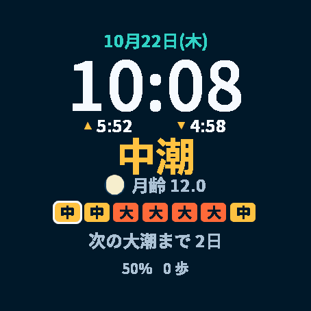
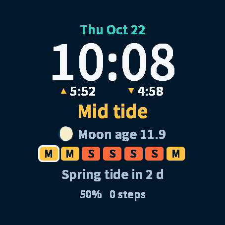
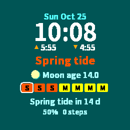
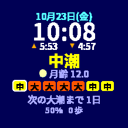
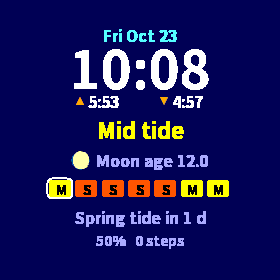
潮回りウォッチ Lite(無料)
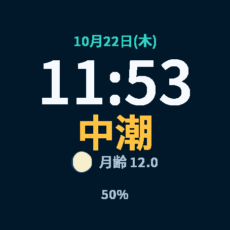
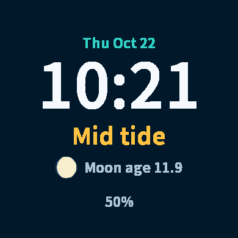
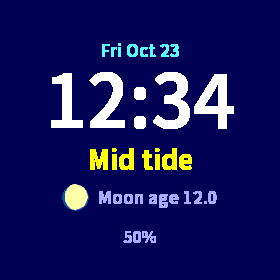
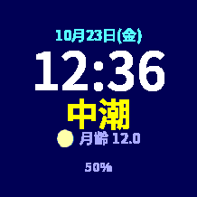
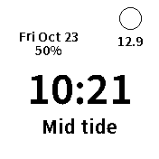
※ 画像はシミュレーターの画面です。日の出・日の入りは、シミュレーターに試験用の位置を与えて表示した例です。歩数・バッテリーなどの値は表示の例です。
潮回りの決め方
旧暦の日付で決めています。
| 潮回り | 旧暦の日付 |
|---|---|
| 大潮 | 1〜3日、14〜17日、29〜30日 |
| 中潮 | 4〜7日、12〜13日、18〜21日、27〜28日 |
| 小潮 | 8〜9日、22〜24日 |
| 長潮 | 10日、25日 |
| 若潮 | 11日、26日 |
潮回りと月齢の計算についてのご注意
- 潮回りは、旧暦の日付による一般的な区分で示す目安です。満潮・干潮の時刻や潮位は表示しません。満潮・干潮の時刻や潮位は、潮見表などでご確認ください。
- 実際の潮の動きは、場所によって暦の区分とずれることがあります。航行や釣行など、安全にかかわる判断には使わないでください。
- 旧暦は日本時間を基準にしています。日本以外の地域では、その地域の時刻で数えた暦と1日ずれることがあります。
- 潮回りと月齢は、時計に内蔵した新月の時刻の表(2025〜2036年。天文計算による)から計算します。潮回りと月齢の計算に通信は不要です。
- 月齢は、表示している時点の値です。潮見表などでよく使われる正午の月齢とは、時刻によって最大で半日(0.5)ほど違います。
- 2036年12月31日までの暦を内蔵しています。それ以降は「潮回りデータの期間外」と表示されます。
価格と購入方法
有料版の「潮回りウォッチ」は、有料(買い切り)のウォッチフェイスです。インストールから48時間は、すべての機能を無料でお試しいただけます。試用期間の終了後は、1回のアンロック購入(US$3.99・買い切り)ですべての機能を引き続きお使いいただけます。月額などの継続課金はありません。
試用が終わると、購入するまで、文字盤に購入用のコードと「www.kzl.io/code」というURLが表示されます。スマートフォンやパソコンでそのURLを開き、コードを入力してUS$3.99をお支払いいただくと、自動でロックが解除されます。
決済はGarminではなく、第三者サービス「KiezelPay」が処理します。購入の案内の画面は英語で表示されます。
「潮回りウォッチ Lite」は無料です。試用期限や購入の画面はありません。なお、有料版は白黒の画面の3機種には対応していません。これらの機種ではLiteをお使いください。
対応機種
有料版(56機種)：丸形の画面(AMOLEDとMIP)のGarmin 56機種に対応しています。
- AMOLED：Forerunner 165・165 Music／265・265S／570（42・47mm）／965／970、Venu 2・2 Plus・2S／Venu 3・3S／Venu 4（41・45mm）、vívoactive 5・6、fēnix 8 AMOLED（43・47mm）／fēnix 8 Pro／fēnix E、epix (Gen 2)／epix Pro (Gen 2)（42・47・51mm）、Instinct 3 AMOLED（45・50mm）／Instinct Crossover AMOLED、MARQ (Gen 2)、Approach S70（42・47mm）、Descent Mk3（43・51mm）、D2 Air X10／Mach 1／Mach 2／Mach 2 Pro（tactix・quatix など同じプラットフォームの機種を含む）
- MIP(反射型)：Forerunner 255・255S（Music を含む）／955、fēnix 7・7S・7X・7 Pro・7S Pro・7X Pro（Wi-Fiなしモデルを含む）／fēnix 8 Solar（47・51mm）／fēnix 9 Pro Solar（47・51mm）、enduro 3
Lite(59機種)：上の56機種に、白黒の画面の3機種(Instinct 3 Solar（45・50mm）、Instinct E（40・45mm）)を加えた59機種に対応しています。白黒の画面では白地に黒で表示し、右上の丸い小窓に月の満ち欠けと月齢を表示します。
※ fēnix 9（43・47mm）・fēnix 9 Pro（43・47・51mm）、Forerunner 70・170、Approach S50・S72、Descent G2 には対応していません。お使いの機種が対応しているかは、Garmin Connect IQストアの各ページの対応機種の一覧でご確認ください。
他の機種や、ほかのアプリの対応状況はGarmin対応機種早見表で確認できます。
よくある質問
Q. 潮回りウォッチは無料で使えますか？
A. 2つあります。有料版の「潮回りウォッチ」は買い切りのウォッチフェイスで、インストールから48時間はすべての機能を無料でお試しいただけます。試用が終わったあとは、US$3.99の買い切り購入ですべての機能を引き続きお使いいただけます。月額などの継続課金はありません。簡易版の「潮回りウォッチ Lite」は無料で、試用期限や購入の画面はありません。
Q. 支払いはどこで行いますか？
A. Garmin公式の決済ではなく、第三者サービス「KiezelPay」が処理します。試用が終わると、文字盤に購入用のコードと「www.kzl.io/code」というURLが表示されます。スマートフォンやパソコンでそのURLを開き、コードを入力してお支払いいただくと、自動でロックが解除されます。購入の案内の画面は英語で表示されます。
Q. 有料版とLiteは何が違いますか？
A. どちらも、時刻・日付・曜日、今日の潮回り、月齢と月の満ち欠け、バッテリーを表示します。日の出・日の入りの時刻、7日分の潮回りの帯、次の大潮までの日数、歩数か心拍の表示、配色の設定は、有料版だけの機能です。Liteは今日の潮回りを大きく表示し、設定の項目はなく、権限も使いません。
Q. 対応機種はどれですか？
A. 有料版は、丸形の画面(AMOLEDとMIP)のGarmin 56機種に対応しています。Liteは、この56機種に白黒の画面の3機種(Instinct 3 Solar 45mm・50mm、Instinct E 40mm・45mm)を加えた59機種に対応しています。主な機種はForerunner 165／255／265／570／955／965／970、Venu 2／3／4、vívoactive 5／6、fēnix 7／8／8 Pro／E／9 Pro Solar、epix (Gen 2)・epix Pro、enduro 3、Instinct 3 AMOLED、MARQ (Gen 2)、Approach S70、Descent Mk3、D2です。全機種の一覧は「対応機種」の項目をご覧ください。
Q. 満潮・干潮の時刻や潮位はわかりますか？
A. いいえ。表示する潮回りは、旧暦の日付による一般的な区分で示す目安で、満潮・干潮の時刻や潮位は表示しません。実際の潮の動きは、場所によって暦の区分とずれることがあります。旧暦は日本時間を基準にしているため、日本以外の地域では、その地域の時刻で数えた暦と1日ずれることがあります。航行や釣行など、安全にかかわる判断には使わないでください。
Q. 通信や位置情報を使いますか？
A. 潮回りと月齢は、時計に内蔵した新月の時刻の表から計算するため、計算に通信は不要です。有料版は、決済サービスKiezelPayによる試用と購入の確認のためだけに、バックグラウンドで通信します。日の出・日の入りは、時計がすでに持っている位置(天気の観測地点、または直近の位置)から計算し、位置が無いときは「--:--」と表示されます。Liteは、通信や位置情報を含め、権限を使いません。
今日の潮回りを、手首で
まずは無料のLiteで見やすさを確かめられます。日の出・日の入りや7日分の潮回りの帯も見たい方は、有料版を48時間無料でお試しください。気に入ったら、そのまま買い切りでアンロックできます。
⌚ 潮回りウォッチ(有料版)をストアで見る ⌚ 潮回りウォッチ Lite(無料)をストアで見る